Final project video:
In the final two weeks, I did attempted to take the learnings from the iterations of weeks gone by, and create a coherent piece -- one that reflects light in the way that I found to be most aesthetically pleasing, and is structurally appealing. I settled on a wooden, laser-cut press-fit kit, as it provided the easiest way for me to create the kind of structure that I envisaged, and because press-fit kits are a personal favourite of mine. The kit was designed on Fusion 360 and fixed on Rhino (the polylines are not closed in Fusion 360).
Laser-cutting:
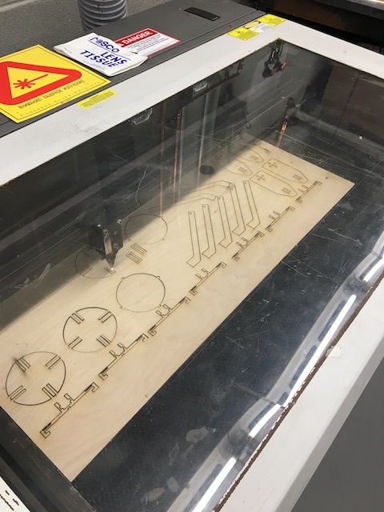 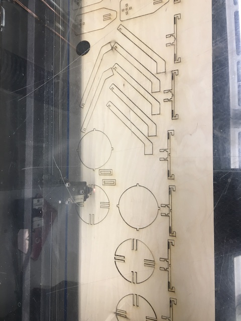 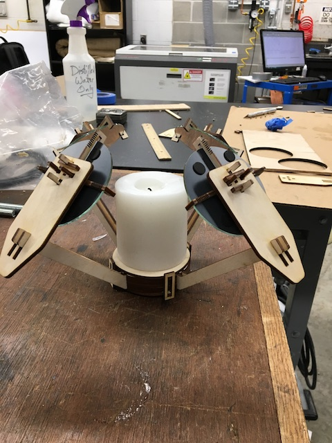 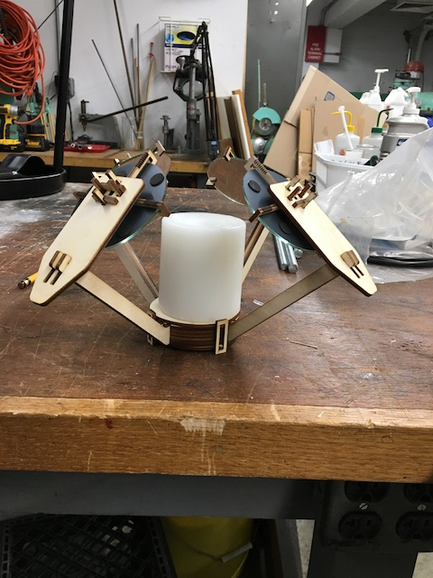 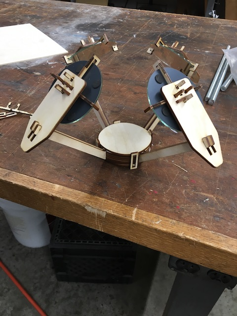Bits and pieces:
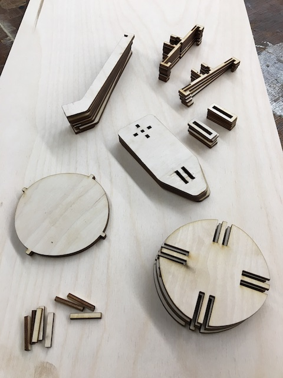 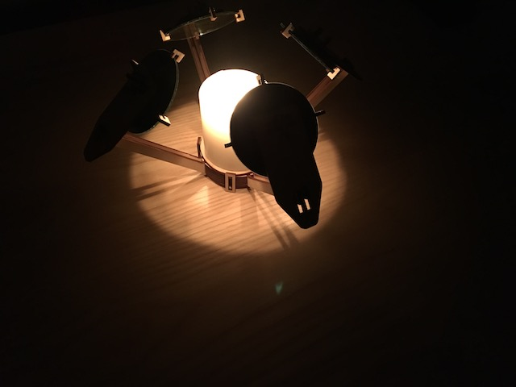 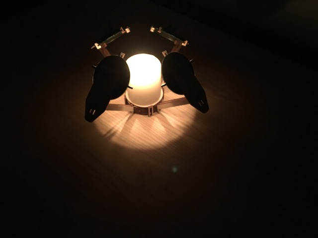 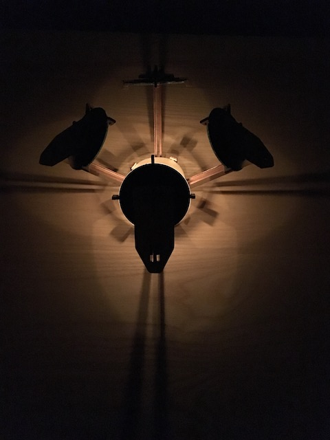 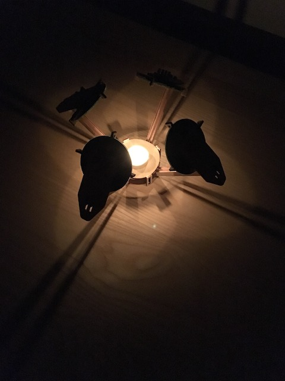 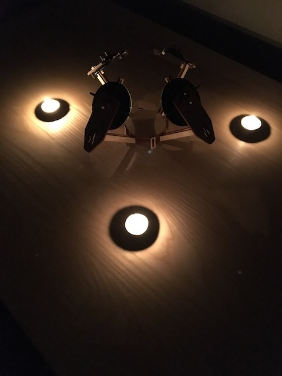 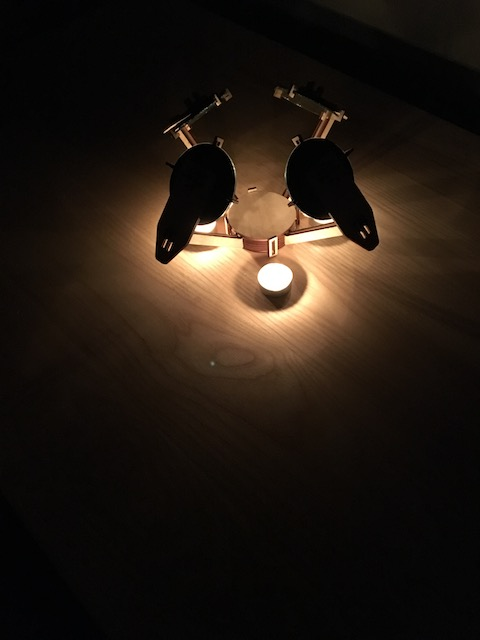 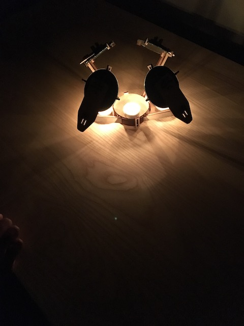 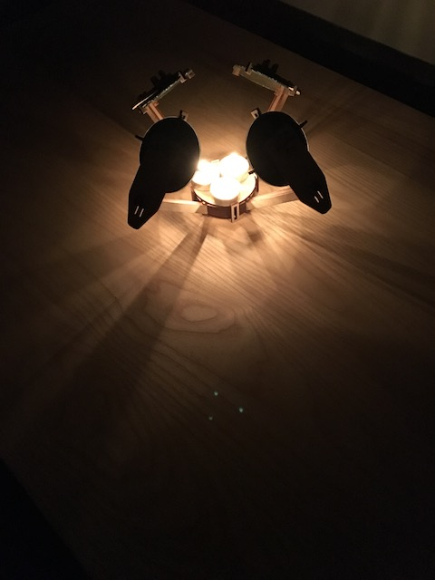Below is a direct comparison of an unassisted candle, vs a candle within the augmenting device. Notice the enhanced light concentration in the case of the taller candle, and the petal-like patterns created by the smaller candle.
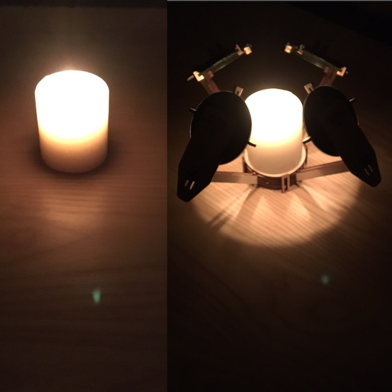 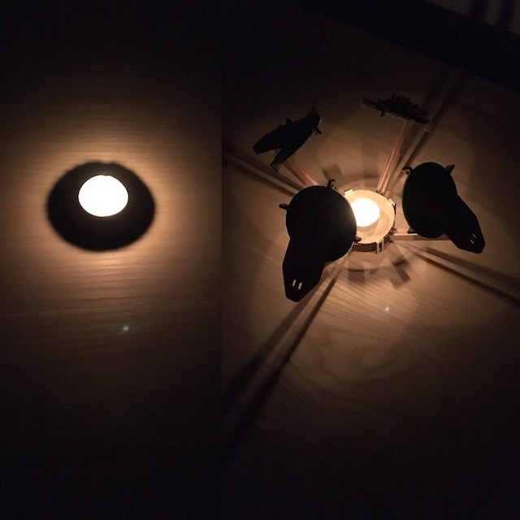The future of such a piece?:
The structure needs work. While I would choose to retain the overall shape in further iterations (the symmetry is pleasing), I would certainly refine the measurements, so the pieces fit snugly. I would also adjust the mirror-holding structure, as inserting and removing mirrors is troublesome -- there is a kerf added to make the pieces flex slightly, but there is still a non-trivial chance of snapping when inserting/removing a mirror. Moreover, while I said that I would choose to retain the overall shape, the aesthetic could certainly be refined. I like the idea of the piece being very distinctive (I noticed, while carrying it around, that the most common reaction was 'what is that?!' -- this is a good thing). However, distinctive need not imply 'scruffy'.